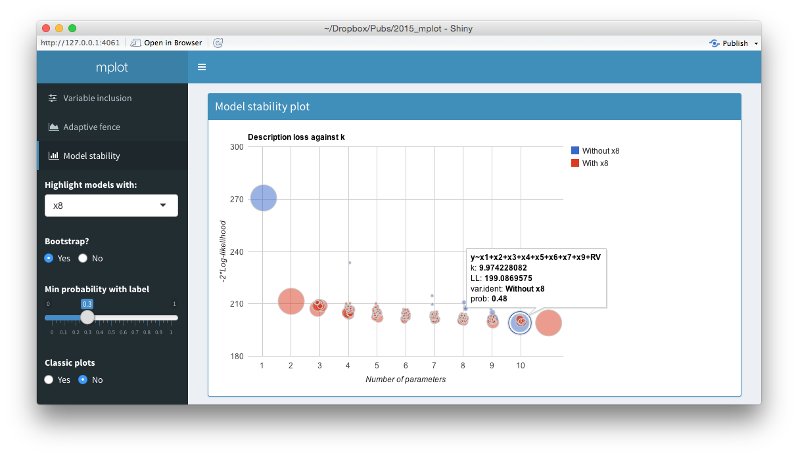
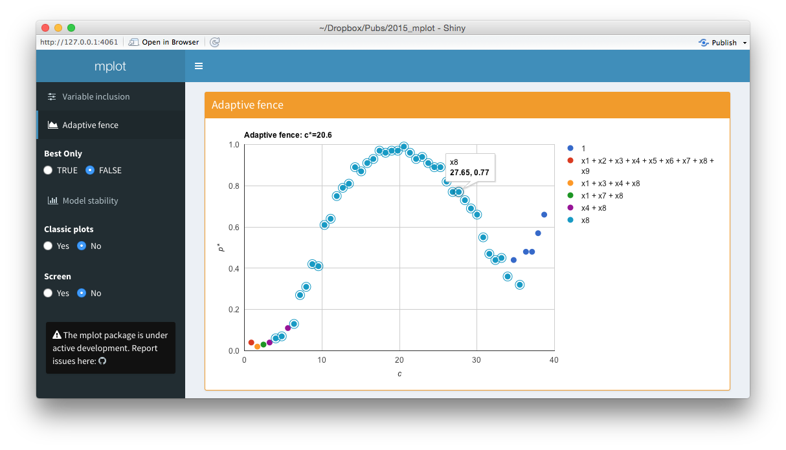
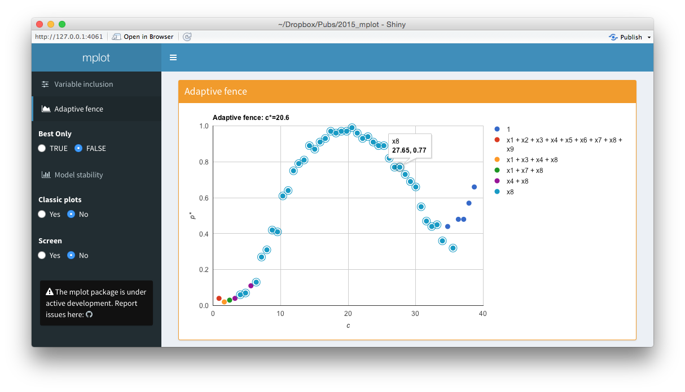

Overview of the interactive graphics provided by mplot.
To facilitate that researchers can more easily gain value from the static plots (see here and here) and to help them interact with the model selection problem more closely, we have provided a set of interactive graphics based on the googleVis package and wrapped them in a shiny user interface. It is still quite novel for a package to provide a shiny interface for its methods, but there is precedent, see, for example McMurdie & Holmes (2013) or Gabry (2015).
Among the most important contributions of these interactive methods is: the provision of tooltips to identify the models and/or variables; pagination of the legend for the variable inclusion plots; and a way to quickly select which variable to highlight in the model stability plots. These interactive plots can be generated when the plot() function is run on an af or vis object by specifying interactive=TRUE.
The mplot package takes interactivity a step further, embedding these plots within a shiny web interface. This is done through a call to the mplot() function, which requires the full fitted model as the first argument and then a vis object and/or af object (in any order).
mplot(lm.art, vis.art, af.art)Note that the vis() and af() functions need to be run and the results stored prior to calling the mplot() function. The result of a call to this function is a webpage built using the shiny package with shinydashboard stylings [Chang et al. (2015);Chang:2015b]. Figure shows a series of screen shots for the artificial example, equivalent to Figures and , resulting from the above call to mplot().
 

Screenshots from the web interface generated using mplot().
The top panel of the figure above shows a model stability plot where the full model that does not contain \(x_8\) has been selected and a tooltip has been displayed. It gives details about the model specification, the log-likelihood and the bootstrap selection probability within models of size 10. The tooltip makes it easier for users to identify which variables are included in dominant models than the static plot equivalent. On the left hand side of the shiny interface, a drop down menu allows users to select the variable to be highlighted. This is passed through the highlight argument. Models with the highlighted variable are displayed as red circles whereas models without the highlighted variable are displayed as blue circles. The ability for researchers to quickly and easily see which models in the stability plot contain certain variables enhances their understanding of the relative importance of different components in the model. Selecting No at the Bootstrap? radio buttons yields the plot of description loss against dimension.
The middle panel of the figure above is a screen shot of an interactive variable inclusion plot. When the mouse hovers over a line, the tooltip gives information about the bootstrap inclusion probability and which variable the line represents. Note that in comparison to the bottom panel of this figure, the legend is now positioned outside of the main plot area. When the user clicks a variable in the legend, the corresponding line in the plot is highlighted. This can be seen in the figure above, where the \(x_8\) variable in the legend has been clicked and the corresponding \(x_8\) line in the variable inclusion plot has been highlighted. The highlighting is particularly useful with the redundant variable, so it can easily be identified. If the number of predictor variables is such that they no longer fit neatly down the right hand side of the plot, they simply paginate, that is an arrow appears allowing users to toggle through to the next page of variables. This makes the interface cleaner and easier to interpret than the static plots. Note also the vertical lines corresponding to traditional AIC and BIC penalty values.
The bottom panel of the figure above is an interactive adaptive fence plot. The tooltip for a particular point gives information about the explanatory variable(s) in the model, the \(\alpha^*=\arg\max_{\alpha\in\mathcal{A}}p^*(c,\alpha)\) value and the \((c,p^*(c))\) pair that has been plotted. Hovering or clicking on a model in the legend highlights all the points in the plot corresponding to that model. In this example, the \(x_8\) legend has been clicked on and an additional circle has been added around all points representing the regression with \(x_8\) as the sole explanatory variable. The shiny interface on the left allows users to toggle between best.only = TRUE and best.only = FALSE.
The interactive graphics and shiny interface are most useful in the exploratory stage of model selection. Once the researcher has found the most informative plot through interactive analysis, the more traditional static plots may be used in a formal write up of the problem.